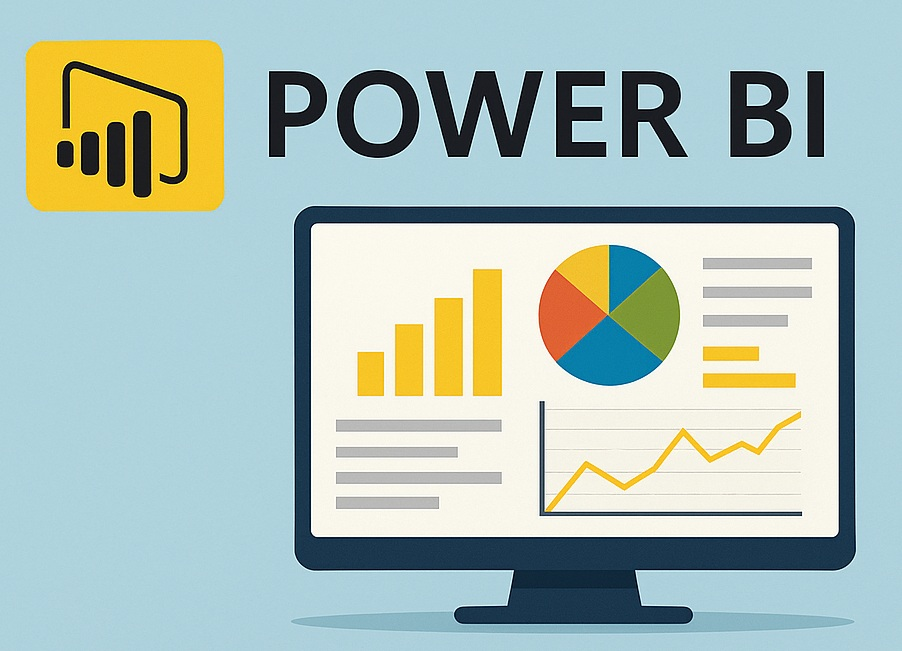

A project analyzing how climate transition risks and ESG sentiment affect stock market stability
using high-frequency data from European and American markets. Tasks included collecting and harmonizing data with SQL, performing time series diagnostics, and applying advanced models (TVP-VAR, Quantile Coherency)
in R Studio to detect risk transmission patterns during periods of financial stress.
This project investigates the resilience of Bitcoin and Ethereum to inflation and financial instability using advanced time-frequency and quantile analysis. Leveraging Python, SQL, and R, I built a daily dataset (2018–2023), performed statistical diagnostics (Jarque-Bera, BDS, Kruse, Hu & Chen tests), and applied Wavelet Coherence and Quantile Coherency to uncover dynamic dependencies across different market regimes.

This project involved designing an interactive Power BI dashboard to visualize and analyze student enrollment across regions, academic programs, and departments. Using Power Query, Excel, and DAX, I cleaned and transformed raw data, built dynamic measures, and provided actionable insights to support academic planning and decision-making.